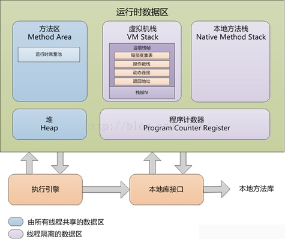

Java基础
String不可变的好处
- 可以缓存hash值
- String Pool的需要
- 线程安全
- 安全性(网络传输安全性)
String字符串用 + 拼接和用 StringBuilder 拼接的差别
JDK6 和 JDK7 中String调用intern()方法的差别
https://tech.meituan.com/2014/03/06/in-depth-understanding-string-intern.html
抽象类和接口的区别
- 从设计层面上看，抽象类提供了一种 IS-A 关系，那么就必须满足里式替换原则，即子类对象必须能够替换掉所有父类对象。而接口更像是一种 LIKE-A 关系，它只是提供一种方法实现契约，并不要求接口和实现接口的类具有 IS-A 关系。
- 从使用上来看，一个类可以实现多个接口，但是不能继承多个抽象类。
- 接口的字段只能是 static 和 final 类型的，而抽象类的字段没有这种限制。
- 接口的成员只能是 public 的，而抽象类的成员可以有多种访问权限。
Exception 和 Error
Throwable
Exception Error
运行时数据区

堆
所有对象都在这里分配内存，是垃圾收集的主要区域（"GC 堆"）。
方法区(包含运行时常量池)
用于存储已被加载的类信息，常量，静态变量，即时编译器编译后的代码等数据。
对这块区域进行垃圾回收的主要目标是对常量池的回收和对类的卸载，但是一般比较难实现。
JDK 1.7 之前，HotSpot 虚拟机把它当成永久代来进行垃圾回收。但是从 JDK 1.7 开始，已经把原本放在永久代的字符串常量池移到 Native Method 中。
程序计数器
记录正在执行的虚拟机字节码指令的地址（如果执行的是本地方法则为空）
虚拟机栈
每个Java方法在执行的同时会创建一个栈桢用于存储局部变量表，操作数栈，常量池引用信息，从调用直至执行完成的过程，就对应着一个栈桢在Java虚拟机栈中入栈和出栈的过程。
本地方法栈
垃圾收集算法
如何判断一个对象是否可以被回收
引用计数法
给对象添加一个引用计数器，当对象增加一个引用，计数器加1，引用失效时计数器减1，引用计数为0时，该对象可回收。
两个对象出现循环引用的情况下，此时对象的计数器永不为0,导致无法对他们进行回收
可达性分析算法
通过GC Roots作为起始点进行搜索，能够到达的对象都是存活的，不可达的对象被回收。
GC Roots包括如下4种:
- 虚拟机栈中引用的对象
- 本地方法栈中引用的对象
- 方法区中类静态属性引用的对象
- 方法区中常量引用的对象
方法区的回收
主要是对常量池的回收和对类的卸载。
引用类型
判断对象是否可被回收与引用有关。
- 被强引用关联的对象不会被回收 (new 建立的强引用)
- 被软引用关联的对象只有在内存不够的情况下才会被回收 (使用 SoftReference类来创建软引用)
- 被弱引用关联的对象一定会被回收，也就是说它只能存活到下一次垃圾回收发生之前 (WeakReference)
- 一个对象是否有虚引用的存在，完全不会对其生存时间构成影响，也无法通过虚引用取得一个对象 (PhantomReference,为一个对象设置虚引用关联的唯一目的就是能在这个对象被回收时收到一个系统通知)
垃圾回收算法
设计模式
[转载] https://www.cnblogs.com/dolphin0520/p/3919839.html
设计模式（Design Pattern）是一套被反复使用、多数人知晓的、经过分类的、代码设计经验的总结。
使用设计模式的目的：为了代码可重用性、让代码更容易被他人理解、保证代码可靠性。 设计模式使代码编写真正工程化；设计模式是软件工程的基石脉络，如同大厦的结构一样。

Copyright © 2019
Powered by 见课就上的小婊砸,
京ICP备18064309号